In China Employee Termination in 2026: Payroll Troubleshooting Checklist for Foreign Employers
Key takeaways
- In China employee termination, payroll failures usually begin with small control defects: incomplete evidence, approval gaps, or mismatched communication.
- A checklist-first release workflow improves consistency under pressure and reduces avoidable off-cycle corrections.
- A troubleshooting matrix helps teams diagnose and fix issues quickly before they become disputes.
- Contested components should be isolated from standard release and moved through controlled exception paths.
- Local implementation differences still matter; uncertain treatment points should be confirmed before release.
Why this format matters for real operators
Foreign employers often have policy documents but still experience termination payroll incidents. The reason is practical: policy tells you what should happen, but not always what to do when something breaks two hours before payroll lock. In that moment, teams need a structured method to decide what is safe to release, what must be fixed immediately, and what should be escalated.
This article uses a troubleshooting format because it mirrors real operational behavior. HR, payroll, manager, and finance teams do not face abstract legal questions at lock time; they face specific symptoms: missing approvals, unclear component labels, employee communication mismatch, unresolved local treatment questions. A troubleshooting model converts those symptoms into concrete actions.
Release readiness checklist (go/no-go)
Before releasing any termination-related payout, run the following checks:
- Basis clarity: case has a documented termination basis and supporting records.
- Component clarity: each payment item is labeled and classified (salary, leave payout, severance, adjustment, reimbursement).
- Approval integrity: required approvals are complete in system, not only chat or email.
- Treatment notes: each released component has documented payroll/tax treatment rationale.
- Communication alignment: employee-facing message matches internal coding and payout scope.
- Exception isolation: unresolved or contested components are separated from release file.
- Recoverability: case can be reconstructed quickly if challenged.
If any critical check fails, move contested items to controlled exception workflow.
Regulatory baseline (concise)
The Labor Contract Law provides the core framework for termination and compensation exposure. The Social Insurance Law supports termination-month obligations tied to processing and closure. Technical tax references provide practical context for final-pay component treatment and documentation. Across sources, the implementation message is consistent: defensibility depends on process quality and evidence integrity, not only formula accuracy.
Some implementation details can vary by city and case facts. For uncertain items, teams should use local confirmation before release instead of assumption-based processing.
Troubleshooting matrix for termination payroll teams
| Symptom at release stage | Likely root cause | Immediate action | Owner |
|---|---|---|---|
| Missing support records | Manager handoff incomplete | Hold contested components, request missing records with deadline | HR + Manager |
| Approval appears in chat only | Workflow bypass | Re-run approval through system authority chain | HR + Payroll |
| Component labeled “other payment” | Weak mapping discipline | Reclassify component and attach treatment note | Payroll |
| Employee message differs from case coding | HR/payroll misalignment | Pause release, align summary and communication template | HR + Payroll |
| Last-minute payout change request | Governance bypass | Reject manual insert, route through exception/off-cycle path | Payroll + Finance |
| Unclear local treatment point | Local practice uncertainty | Mark as “confirmation required,” escalate to local advisor/vendor | HR/Payroll + Vendor |
| Repeated off-cycle corrections | Systemic process defect | Launch root-cause review and control retrofit | HR + Payroll + Finance |
This matrix should be embedded in the operating rhythm, not used only in crisis cases.
Role-by-role SOP (non-timeline framing)
HR operations
- Maintain case summary integrity (basis code, risk tag, component scope).
- Verify evidence packet before passing to payroll.
- Own communication template alignment and query log quality.
- Trigger escalation when checklist gates fail.
Manager / business owner
- Provide complete factual support records.
- Confirm business decision and sign-off scope.
- Avoid informal payout instructions outside workflow.
Payroll operations
- Map each component with treatment notes and release verdict (release/hold).
- Enforce scope control; do not mix contested items into clean release set.
- Run reconciliation and archive output with version control.
Finance/control
- Validate payout authorization and ledger mapping.
- Enforce governance for off-cycle and exception payments.
- Review high-risk cases for cost and control impact.
Vendor/EOR support (if applicable)
- Confirm local process feasibility and known constraints.
- Provide local confirmation for uncertain treatment issues.
- Deliver closure evidence and residual-risk notes.
Required document checklist
- Case summary with termination basis and risk tag
- Contract and amendments
- Support records for basis and calculations
- Versioned payout worksheet with component notes
- Approval records by required roles
- Employee communication record
- Payroll output and reconciliation snapshot
- Closure evidence (including offboarding/statutory actions)
Exception handling playbook
When a case is not release-ready, use this sequence:
- Classify issue: evidence gap, approval gap, treatment uncertainty, or communication mismatch.
- Scope decision: release uncontested approved components only.
- Assign owner: named person with response SLA.
- Escalate correctly: HR compliance + payroll lead + finance/legal as needed.
- Communicate clearly: employee-facing status with factual next steps.
- Re-test checklist: only release after critical checks pass.
- Log learning: update matrix and controls from root cause.
This avoids repeated “emergency fixes” that create recurring risk.
System implementation notes
To make this repeatable:
- Add mandatory fields: basis code, risk tag, release verdict by component.
- Enforce system approvals before payout file generation.
- Use immutable worksheet and communication versioning.
- Implement exception tracker with aging and owner fields.
- Add dashboard metrics for recurring failure signals.
Suggested KPIs:
- Checklist failure rate by category
- Contested-component leakage into in-cycle releases
- Off-cycle correction ratio
- Communication mismatch incidence
- 30-day dispute trigger rate
- Case archive completeness score
Common mistakes and how to prevent them
- Mistake: treating checklist as optional when busy.
Prevention: make checklist completion a hard release gate.
- Mistake: assuming unresolved issues are “small.”
Prevention: classify and isolate unresolved items with explicit ownership.
- Mistake: relying on memory instead of documented treatment notes.
Prevention: require component-level note before release.
- Mistake: prioritizing speed over communication coherence.
Prevention: pause release if messaging and coding diverge.
- Mistake: no post-case process correction.
Prevention: require root-cause review for every exception case.
What to do now: 10-step execution plan
- Publish release checklist as mandatory control.
- Roll out troubleshooting matrix to HR/payroll managers.
- Add release verdict fields to workflow system.
- Standardize component mapping and treatment notes.
- Enforce authority matrix approvals in system.
- Launch exception tracker with SLA monitoring.
- Standardize employee communication templates by case type.
- Start weekly review of checklist failures.
- Run monthly quality calibration with finance and HR.
- Update local confirmation channels quarterly.
What to watch next
Foreign employers should track whether local dispute handling expectations evolve around evidence sufficiency and process behavior. The most useful adaptation is usually operational: improve handoff quality, tighten release gates, and reduce reliance on late-cycle manual intervention.
FAQ
1) Can we release full payout if one checklist item is missing?
For contested or high-impact components, no. Missing critical checks should trigger hold/escalation.
2) Is this model usable for EOR structures?
Yes. Define ownership clearly between client and EOR for each checklist control.
3) Who should own final release decisions?
Jointly HR compliance and payroll lead, with finance authorization where required.
4) What if local treatment guidance is unclear?
Escalate and confirm before release. Do not use assumption-based processing.
5) Does this replace legal advice?
No. It is an operational framework and should be paired with qualified local professional advice.
Disclaimer
This content is informational only and does not constitute legal, tax, or accounting advice. China employment implementation can vary by city and case facts. Employers should seek qualified local professional advice for case-specific decisions.
Sources
- National People's Congress. Labor Contract Law of the People's Republic of China. Official English text: http://www.npc.gov.cn/zgrdw/englishnpc/Law/2007-12/13/content_1384064.htm (accessed 2026-02-27).
- National People's Congress. Social Insurance Law of the People's Republic of China. Official English text: http://www.npc.gov.cn/zgrdw/englishnpc/Law/2009-02/20/content_1471106.htm (accessed 2026-02-27).
- PwC Worldwide Tax Summaries. People's Republic of China – Individual taxes on personal income. https://taxsummaries.pwc.com/peoples-republic-of-china/individual/taxes-on-personal-income (accessed 2026-02-27).
- Littler. Key Recent Developments in China's Employment Law: A China-U.S. Comparative Perspective for Multinational Employers. 2025-09-16. https://www.littler.com/news-analysis/asap/key-recent-developments-chinas-employment-law-china-us-comparative-perspective.
China-Payroll.com supports foreign employers with compliance-first EOR and payroll operations for termination workflows.
Need local employment support in China?
If you need a compliance-first partner for hiring, payroll, and risk controls in China, China-Payroll.com can help evaluate the right setup.
Image Prompt Pack
Create a 16:9 hero image for article title: 'In China Employee Termination in 2026: Payroll Troubleshooting Checklist for Foreign Employers'. Scene: global operations team evaluating workforce model options for China market entry. Include motifs: decision matr…